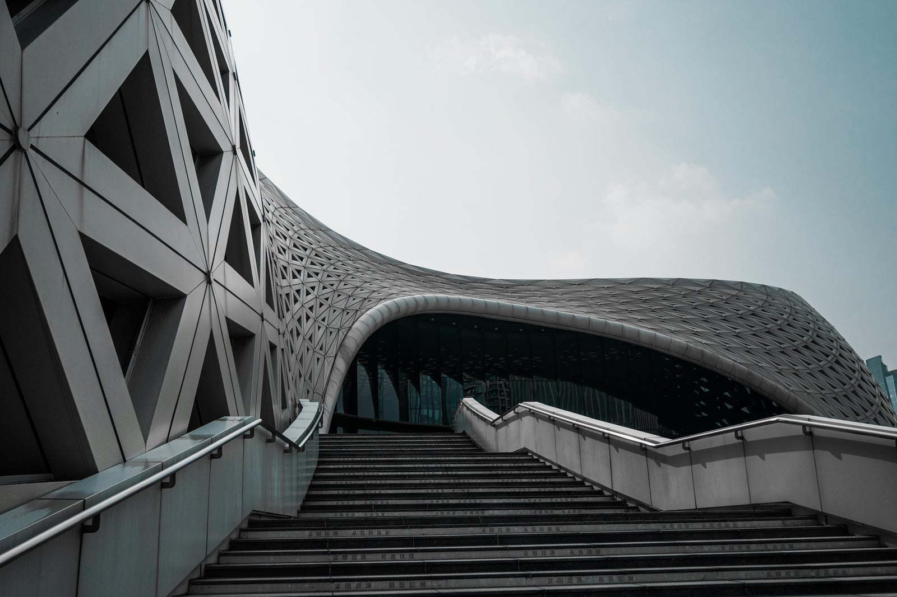

ARTIZYN / DESIGN STUDIO
"Spaces that Speak. Clients Who Inspire."
"The team transformed our dream home into a beautiful and functional living space. Their creativity, attention to detail, and dedication exceeded our expectations."
"From concept to design development, the team demonstrated professionalism and innovation. They perfectly translated our business vision into a modern and inspiring architectural space."
"Their thoughtful approach to design created a perfect balance between aesthetics and functionality. Every detail reflected our personality, making the entire space truly feel like our own."
What types of projects do you handle?
We provide architectural design services for residential, commercial and interiors Our services are tailored to the needs, scale, and requirements of each project.
How do I start a project with your firm?
You can begin by contacting us through our inquiry form or email. Share a brief description of your project, your location, and your goals. We will review your inquiry and discuss the next steps.
How much do architectural services cost?
Professional fees depend on the project's scope, complexity, size, and required services. After an initial discussion, we can provide a proposal outlining the scope of work, deliverables, and corresponding fees.
How long does the design process take?
The timeline varies depending on the project’s size, complexity, and the scope of services. We establish an anticipated schedule during the initial stages of project planning.
Can you work with an existing design or building?
Yes. We may provide consultation, renovation, or design development services for existing spaces, subject to an assessment of the project and the services required.
Where do you accept projects?
We are based in PUP CEA and accept projects in Residential, Commercial, and Interior Design. For projects outside these areas, please contact us to discuss feasibility and requirements.
What should I prepare before contacting you?
It is helpful to have the project location, approximate site or floor area, intended use, initial budget range, and any existing plans or references. However, you can still contact us if your ideas are at an early stage.
We value the relationships we build with our clients.
Socials @artizyn
Let us make your dream come true
Work with us